Outputs
The Outputs section of the Quuppa Positioning Engine Web Console (QPE Web Console) status panel displays the configuration for data destinations and system logs. By default, the QPE does not record or store tracking data. You can create and control output targets in the QPE Web Console or via corresponding Quuppa APIs.
This panel also includes options to record binary logs for the QPE. You can use these binary logs to troubleshoot deployment and configuration issues. The QPE does not record binary logs by default, but you can configure the system to record them as needed.
Data Player Recording
To view QPE data within the Quuppa Data Player application, you must configure the QPE to record data. This row displays the current recording status, the storage directory path, and the filename prefix. The system automatically generates the filename by combining the specified prefix and the recording timestamp.
Manage the recording using the following interface actions:
- To start the recording: Click Start.
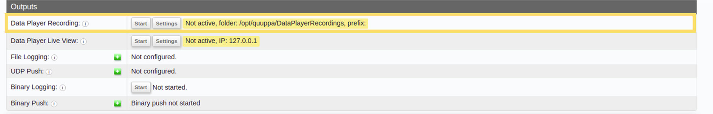
- To change the recording settings (i.e. target prefix): Click
Settings.
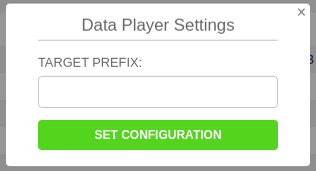
- To stop the recording: Click Stop.
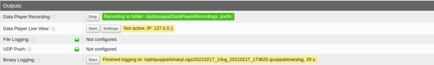
This section executes the Create output target and Control
output target (start/stop) API methods.
Data Player Live View
The Quuppa Data Player application includes a Live View option. This row displays the status of the Live View and the target IP address where the data is sent.
Manage the Live View using the following interface actions:
- To start the Live View: Click Start.
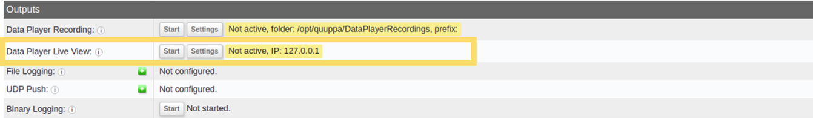
- To change the Live View parameters (i.e. the target IP address): Click
Settings. Use 127.0.0.1 for the local machine.
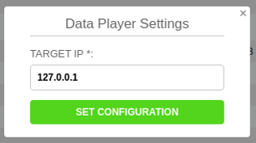
- To stop using the feature: Click Stop.
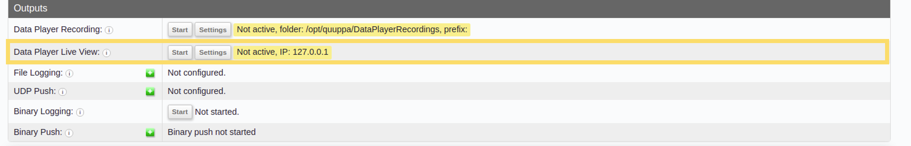
This section executes the Create output target and Control
output target (start/stop) API methods.
File Logging
The File Logging row displays the current logging configurations for the project file.
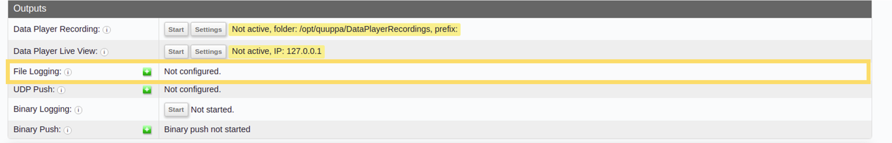
You can use this interface to create or edit local configuration targets as needed.
Manage the logging configurations using the following interface actions:
- To add or edit configuration: Click the add/edit configuration (+) icon next to the row heading to open the configuration window.
- To start a newly created target: Click Start. New targets do not start automatically upon creation.
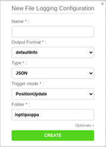
This section uses the Create output target and Control
output target (start/stop) API methods.
UDP Push
The UDP Push row displays the current UDP Push configuration.
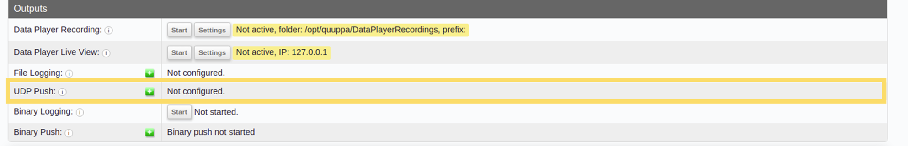
You can use this interface to create or edit local targets as needed.
Configure the data destinations using the following interface action:
- To add or edit UDP push target: Click the add/edit configuration (+) icon next to the row heading to open the configuration window.
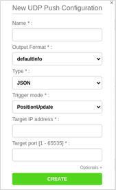
This section uses the Create output target and Control
output target (start/stop) API methods.
MQTT Publisher
The MQTT Publisher row displays current MQTT publisher configurations.
As an alternative to plain UDP, you can also publish position data via MQTT. MQTT establishes a reliable, TCP-based connection to an MQTT broker. You can also deploy MQTT over a WebSocket connection. This is useful, for example, if the QPE system operates behind a firewall that only permits outbound HTTP traffic.
The Quuppa MQTT publisher implementation is based on an MQTT v5 client.
The system requires specific topic structures depending on the data type:
-
Tag data topics: For tag data, the Quuppa MQTT publisher uses a predefined topic structure in the following format:
quuppa/apidata/<project-key>/payload|location|taginfo/<format-name>/<tag-id>The
payload|location|taginfovariable depends on the trigger mode configured in the target. Use the following specific configurations:payloadfor interval trigger mode.locationfor location-related triggers.taginfofor thelastSeenUpdatetrigger.
-
Positioning Engine (PE) format topics: For positioning engine data, use the predefined topic structure
quuppa/apidata/<project-key>/peInterval/<format-name>. You can add a custom prefix to this topic structure. -
Locator format topics: For Locator data, use the predefined topic structure
quuppa/apidata/<project-key>/locatorInterval/<format-name>. You can add a custom prefix to this topic structure.
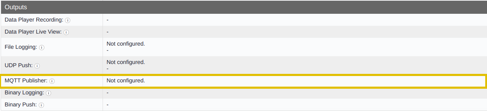
Similar to UDP Push configurations, you can either create a persistent MQTT output in the Quuppa Site Planner or create outputs directly through the QPE Web Console interface.
Configure the publisher settings using the following interface action:
- To add or edit a publisher configuration: Click the add/edit configuration (+) icon next to the row heading to open the configuration window and edit the publisher settings.
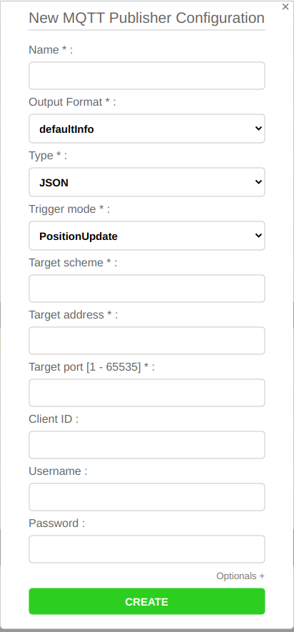
This section uses the Create output target and Control
output target (start/stop) API methods. For more details on creating
and controlling targets over the API, see the Quuppa API documentation.
Binary Logging
The binary logging tool records all system data for diagnostic and debugging purposes.
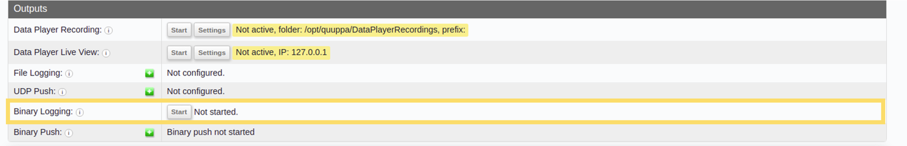
Manage binary logging operations using the following interface actions:
- To start recording binary logs: Click Start. Ensure that sufficient storage space is available on the local drive before initiating a recording, as log files can become large.
- To stop recording binary logs: Click Stop. The interface displays the directory path where the log file is saved once the recording ends.
- To send logs to support: Compress the directory containing the binary logs into a ZIP file and send it to Quuppa support for remote analysis. For more details, see the Record Binary Data for Quuppa Support section.
This section uses the Log Binary Data API method.

If you need help troubleshooting your deployment, the binary log data can be sent to Quuppa Support for analysis after recording. To do so, make a zip file of the directory containing the binary logs (i.e. the path shown by the web console) and send it to Quuppa. For more details, see the Record Binary Data for Quuppa Support section.
This section uses the Log Binary Data API method.
Binary Push
The binary push feature transmits raw data from the local system to another Quuppa Positioning Engine (QPE) using user datagram protocol (UDP) packets.
This feature is used for testing and process validation. For example, deployment teams can mirror real tracking data from a live production QPE onto a separate test server. This allows you to safely validate that a new software release is fully stable and suitable for your specific environment before executing a live deployment.
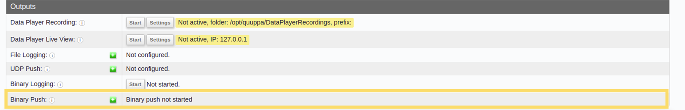
For more details on using this feature, see Push Binary Data section of this guide.